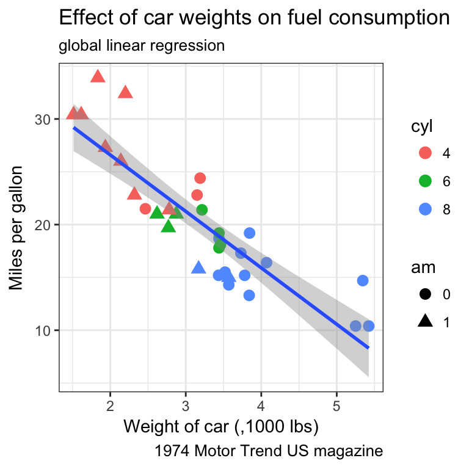
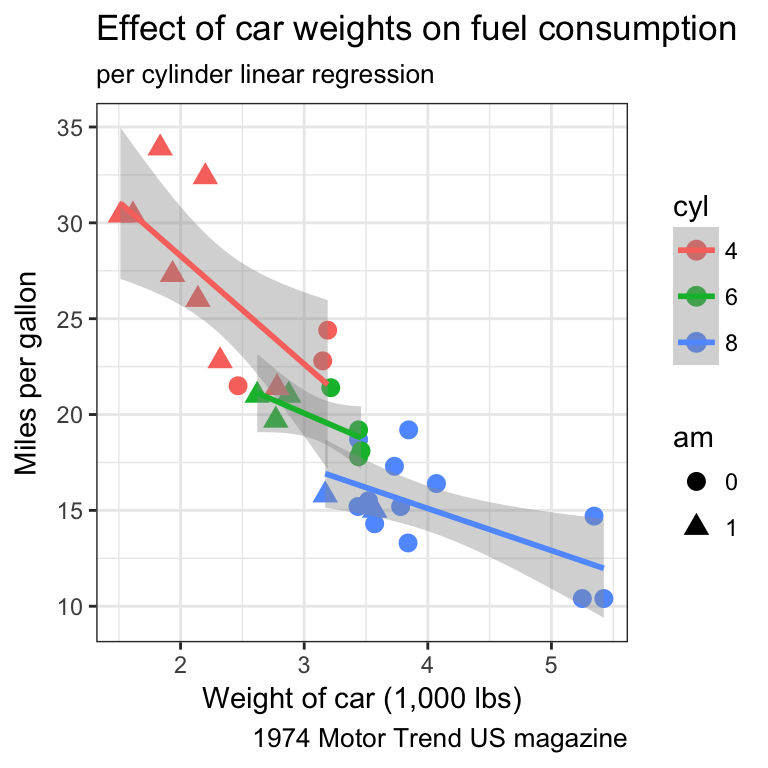
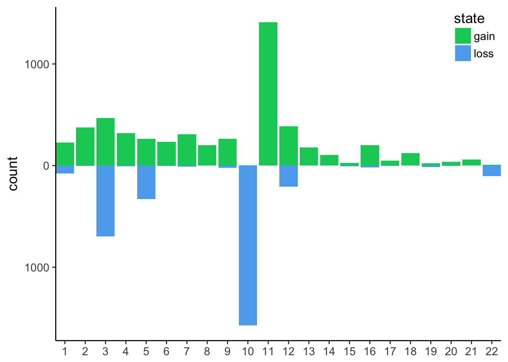

This practical aims at performing exploratory plots and how-to build layer by layer to be familiar with the grammar of graphics. In the last part, a supplementary exercise will focus on plotting genome-wide CNV. You will also learn to use the forcats package which allows you to adjust the ordering of categorical variables appearing on your plot.
The mtcars dataset is provided by the ggplot2 library (have a look above at the first lines printed using the head() function). As for every (or near to every) function, most datasets shipped with a library contain also a useful help page (?).
Plot the fuel consumption on the y axis and the cars weight on the x axis.
The geom_smooth() layer can be used to add a trend line. Try to overlay it to your scatter plot.
by default geom_smooth is using a loess regression (< 1,000 points) and adds standard error intervals.
method argument can be used to change the regression to a linear one: method = "lm"se = FALSEIt would be more useful to draw a regression line on the scatter plot and without the standard error. Using the help (?), adjust the relevant setting in geom_smooth().
The cyl variable is of type double, thus a continuous variable. To map as the shape aesthetics, mind coercing the variable to a factor


Remember that:
ggplot(aes()) command will be inherited by all following layersaes() of individual geoms are specific (and overwrite the global definition if present).We will now look at another built-in dataset called ToothGrowth. This dataset contains the teeth length of 60 guinea pigs which received 3 different doses of vitamin C (in mg/day), delivered either by orange juice (OJ) or ascorbic acid (VC).
Is this dataset tidy?
plot the distributions as boxplots of the teeth lengths by the dose received
attribute a different filling colour to each delivery method
When the dataset is tidy, it is easy to draw a plot telling us the story: vitamin C affects the teeth growth and the delivery method is only important for lower concentrations.
Boxplots are nice but misleading. The size of the dataset is not visible and the shapes of distrubutions could be better represented.
geom_dotplot()change the following options in geom_dotplot():
binaxis = "y" for the y-axisstackdir = "center"binwidth = 1 for no binning, display all dotsgeom_violin() to the previous plot to get a better view of the distribution shape.The order of the layers matters. Plotting is done respectively. Set the option trim = FALSE to the violin for a better looking shape
Now we are missing summary values like the median which is shown by the boxplots. We should add one.
stat_summary() to the previous plotby default stat_summary() adds the mean and +/- standard error via geom_pointrange(). specify the fun.y = "median" and appropriate geom, colour.
stat_summary() in the previous plot from median to mean_cl_boot and polish the labels.different summary statistics from the library Hmisc are available. Let’s try the mean_cl_boot that computes the non-parametric bootstrap to obtain 95% confidence intervals (mean_cl_normal assumes normality)
Of note, a ggplot extension named ggbeeswarm proposes a very neat dotplot that fits the distribution.
ToothGrowth %>%
ggplot(aes(x = factor(dose), y = len)) +
ggbeeswarm::geom_quasirandom()Let’s have a look at a real output file for CNV detection. The used tool is called Reference Coverage Profiles: RCP. It was developed by analyzing the depth of coverage in over 6000 high quality (>40×) genomes. In the end, for every kb a state is assigned and similar states are merged eventually.
state means:
The file is accessible here. It is gzipped but readr will take care of the decompression. Actually, readr can even read the file directly from the website so you don’t need to download it locally.
CNV.seg.gz has 5 columns and the first 10 lines look like:
CNV
CNV.seg.gz in R.several issues must be fixed:
#chrom comtains a hash and length (kb). Would be neater to fix this upfront.plot the counts of the different states. We expect a majority of diploid states.
plot the counts of the different states per chromosome. Might be worth freeing the count scale.
using the previous plot, reorder the levels of chromosomes to let them appear in the karyotype order (1:22, X, Y)
we could explicity provide the full levels lists in the desired order. However, in the tibble, the chromosomes appear in the wanted order. See the fct_inorder() function in the forcats package to take advantage of this.
See the fct_collapse() function in the forcats
filter the tibble only for autosomes and remove segments with no coverage and diploid (i.e states 0 and 2 respectively). Save as cnv_auto.
for loss counts, set them to negative so the barplot will be display up / down. Save as cnv_auto_chr
plot cnv_auto_chr using the count as the y variable.
this is the final plot, where the following changes were made:
y axis in absolute numbersexpand = c(0, 0) on the x axis. see stackoverflow’s answertheme_classic()legend.position and legend.justification in a theme() call.x axis, you could use chromosomes if you preferc("springgreen3", "steelblue2")
It is now obvious that we have mainly huge deletions on chromosome 10 and amplifications on chromosome 11.
In order to plot the genomic localisations of these events, we want to focus on the main chromosomes that were affected by amplifications/deletions.
the function fct_lump from forcats ease lumping. Just pick n = 5 to get the top 5 chromosomes